Chapter 5 Graphics in R
There are three kinds of plotting functions in R:
- Functions that generate a new plot, e.g.
hist()andplot(). - Functions that add extra things to an existing plot,
e.g.
lines()andtext(). - Functions that allow you to interact with the plot, e.g.
locator()andidentify().
The normal procedure for making a graph in R is to make a fairly simple initial plot and then add on points, lines, text etc., preferably in a script.
5.1 Simple plot on the screen
Load the births data and get an overview of the variables:
## 'data.frame': 500 obs. of 8 variables:
## $ id : num 1 2 3 4 5 6 7 8 9 10 ...
## $ bweight: num 2974 3270 2620 3751 3200 ...
## $ lowbw : num 0 0 0 0 0 0 0 0 0 0 ...
## $ gestwks: num 38.5 NA 38.2 39.8 38.9 ...
## $ preterm: num 0 NA 0 0 0 0 0 0 0 0 ...
## $ matage : num 34 30 35 31 33 33 29 37 36 39 ...
## $ hyp : num 0 0 0 0 1 0 0 0 0 0 ...
## $ sex : num 2 1 2 1 1 2 2 1 2 1 ...Now look at the birth weight distribution with
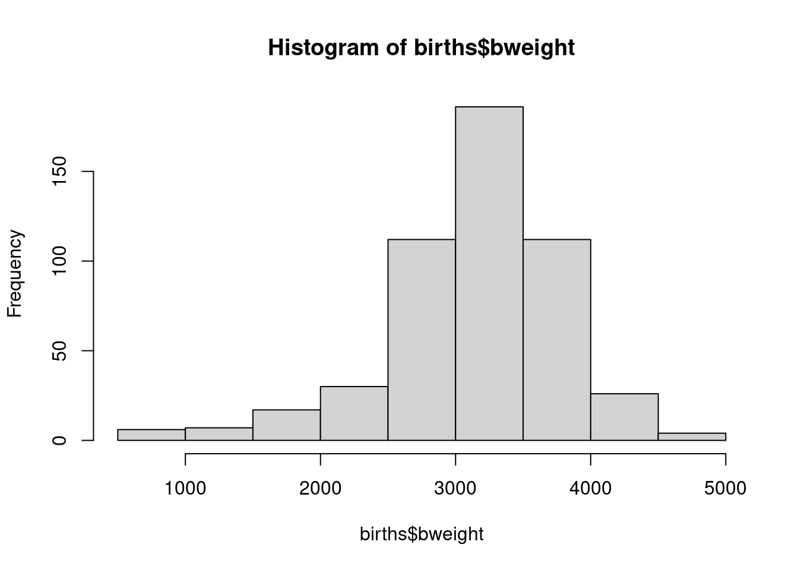 The histogram can be refined – take a look at the possible options with
and try some of the options, for example:
To look at the relationship between birthweight and gestational weeks, try
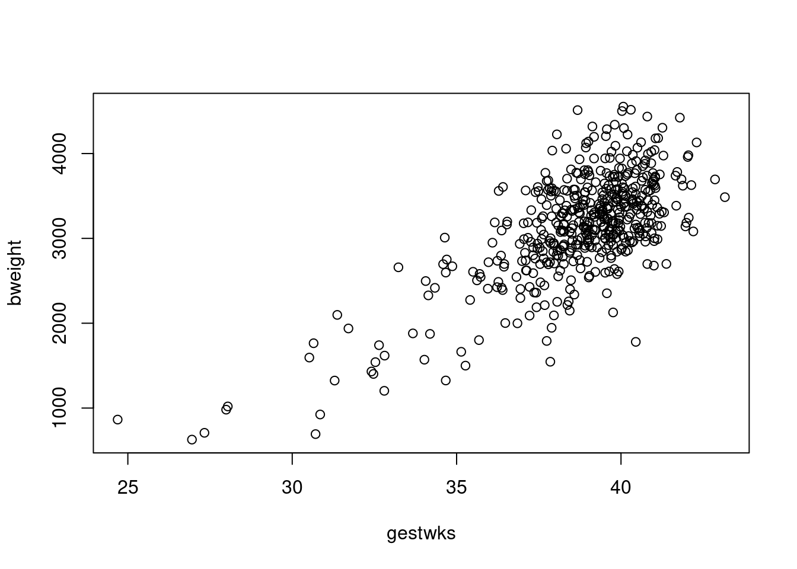
You can change the plot-symbol by the option pch=. If you
want to see all the plot symbols try:
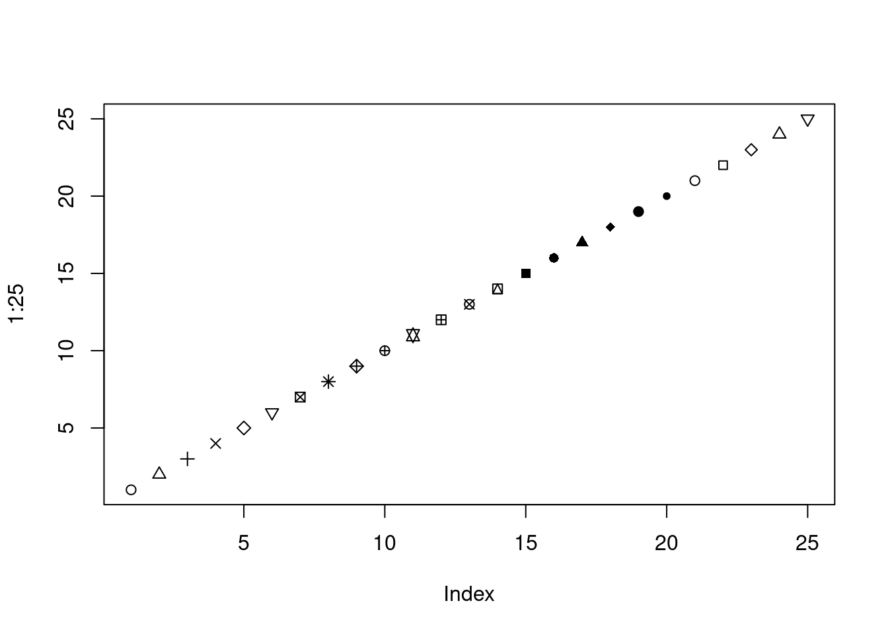
- Make a plot of the birth weight versus maternal age with
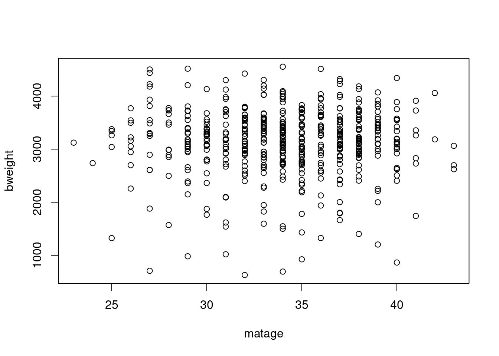 - Label the axes with
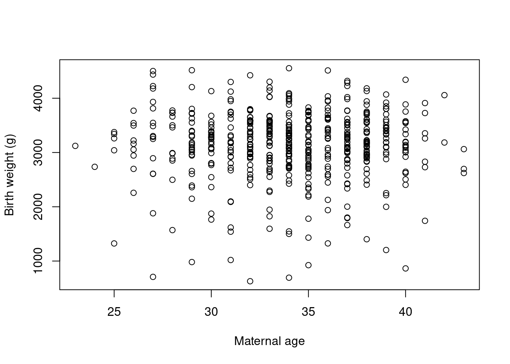
5.2 Colours
There are many colours recognized by R. You can list them all by
colours() or, equivalently, colors() (R allows you to
use British or American spelling). To colour the points of birthweight
versus gestational weeks, try
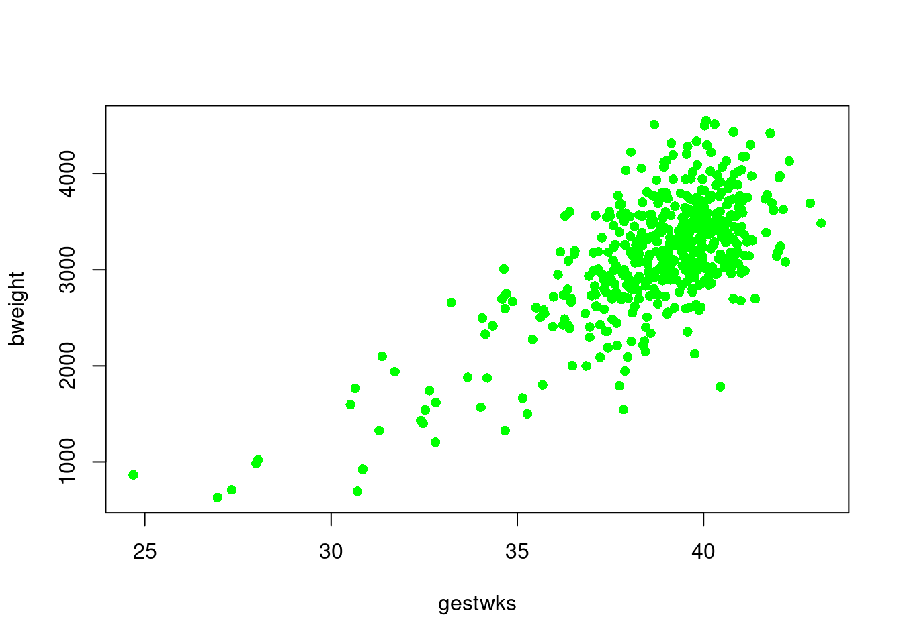
This creates a solid mass of colour in the centre of the cluster of
points and it is no longer possible to see individual points. You can
recover this information by overwriting the points with black circles
using the points() function.
with(births, plot(gestwks, bweight, pch = 16, col = "green"))
with(births, points(gestwks, bweight, pch = 1))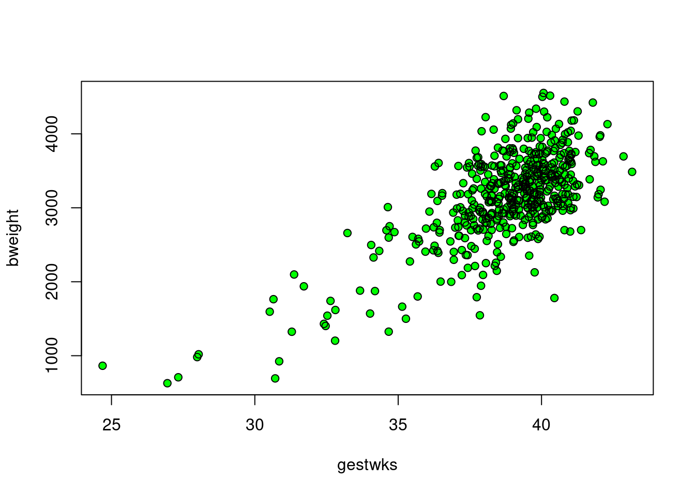
Note: when the number of data points on a scatter plot is large, you may also want to decrease the point size: to get points that are 50% of the original size, add the parameter cex=0.5 (or another number <1 for different sizes).
5.3 Adding to a plot
The points() function just used is one of several functions
that add elements to an existing plot. By using these functions, you
can create quite complex graphs in small steps.
Suppose we wish to recreate the plot of birthweight vs gestational
weeks using different colours for male and female babies. To start with
an empty plot, with type='n' argument.
Then add the points with the points function.
with(births, plot(gestwks, bweight, type = "n"))
with(
births,
points(gestwks[sex == 1], bweight[sex == 1], col = "blue")
)
with(
births,
points(gestwks[sex == 2], bweight[sex == 2], col = "red")
)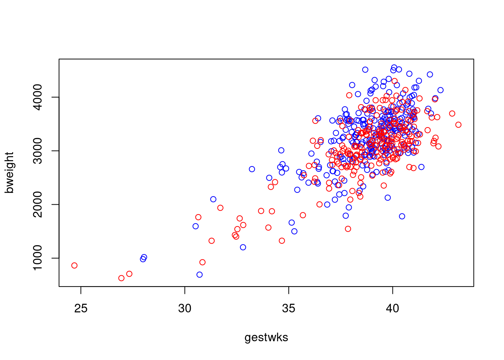
To add a legend explaining the colours, try
with(births, plot(gestwks, bweight, type = "n"))
with(
births,
points(gestwks[sex == 1], bweight[sex == 1], col = "blue")
)
with(
births,
points(gestwks[sex == 2], bweight[sex == 2], col = "red")
)
legend(
"topleft",
pch = 1,
legend = c("Boys", "Girls"),
col = c("blue", "red")
)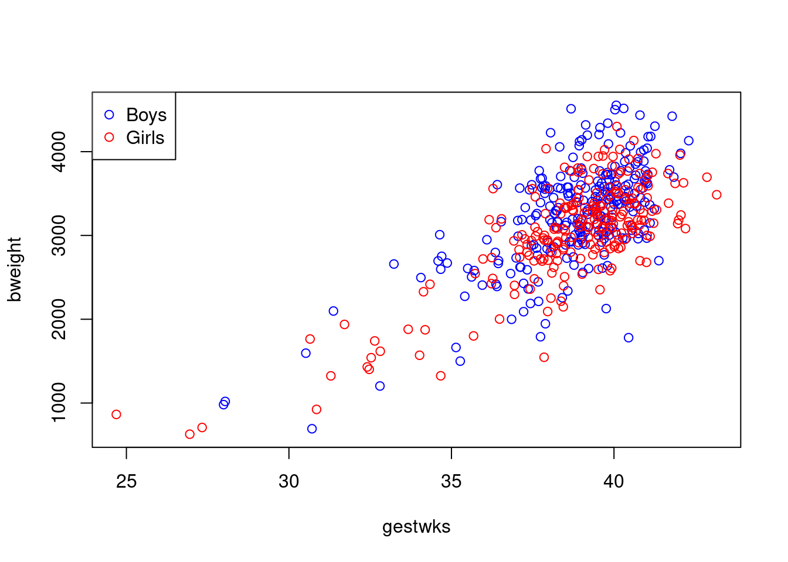 which puts the legend in the top left hand corner.
Finally we can add a title to the plot with
with(births, plot(gestwks, bweight, type = "n"))
with(
births,
points(gestwks[sex == 1], bweight[sex == 1], col = "blue")
)
with(
births,
points(gestwks[sex == 2], bweight[sex == 2], col = "red")
)
legend(
"topleft",
pch = 1,
legend = c("Boys", "Girls"),
col = c("blue", "red")
)
title(
"Birth weight vs gestational weeks in 500 singleton births"
)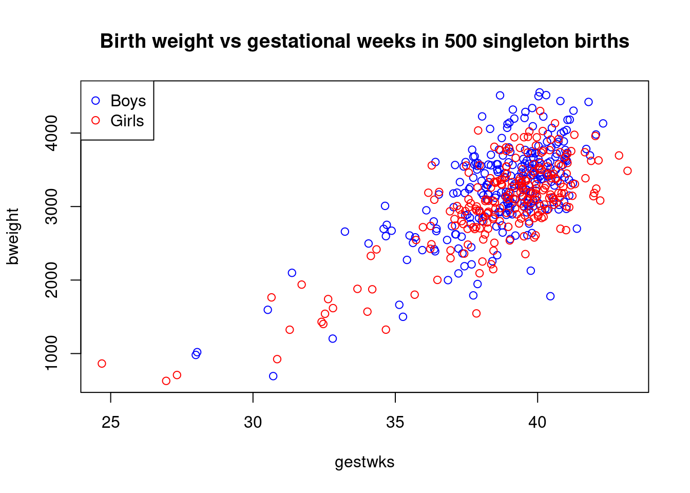
5.4 Using indexing for plot elements
One of the most powerful features of R is the possibility to index vectors, not only to get subsets of them, but also for repeating their elements in complex sequences.
Putting separate colours on males and female as above would become very clumsy if we had a 5 level factor instead of sex.
Instead of specifying one color for all points, we may specify a
vector of colours of the same length as the gestwks and
bweight vectors. This is rather tedious to do directly, but R
allows you to specify an expression anywhere, so we can use the fact
that sex takes the values 1 and 2, as follows:
First create a colour vector with two colours,
and take look at sex:
## [1] "blue" "red"## [1] 2 1 2 1 1 2 2 1 2 1 1 2 2 1 2 1 2 1 2 2 2 1 2 2 2 1 2 1 2 1 2 2 1 1 2 2 1
## [38] 1 2 1 2 1 1 1 1 1 1 1 1 1 1 2 1 2 1 1 1 1 1 1 2 1 1 2 1 1 2 2 1 2 1 1 1 1
## [75] 1 2 1 1 2 1 2 1 1 2 1 1 1 2 1 1 1 2 1 2 1 1 2 1 2 2 2 2 2 2 2 1 1 2 2 2 1
## [112] 2 2 1 2 2 2 2 1 1 2 1 1 2 1 1 2 1 2 1 1 1 1 2 1 2 1 1 1 2 1 2 2 1 1 1 2 2
## [149] 2 2 2 2 1 2 1 1 2 1 1 2 2 1 2 1 1 1 1 1 2 1 1 2 2 1 1 1 2 2 2 2 1 2 1 2 1
## [186] 1 2 2 1 2 2 1 2 1 2 2 2 2 1 1 1 2 1 1 2 1 1 1 1 2 2 2 2 2 1 1 2 1 2 2 2 1
## [223] 2 1 1 1 1 2 1 2 2 2 1 2 2 2 1 1 2 1 1 2 1 2 2 2 1 1 2 2 2 2 1 1 1 2 2 1 2
## [260] 2 2 2 1 1 1 1 1 1 2 1 2 1 2 2 2 2 2 1 1 1 2 2 2 1 2 1 2 1 2 1 1 1 2 2 2 2
## [297] 1 2 1 1 2 1 2 1 1 2 1 2 1 2 2 1 1 2 1 1 2 1 1 2 2 1 1 1 1 2 2 2 2 1 1 1 1
## [334] 2 1 1 2 2 1 2 2 1 1 2 1 1 2 1 2 1 1 1 1 2 1 1 2 2 2 1 1 1 1 1 1 2 2 2 2 2
## [371] 1 1 2 1 1 2 1 2 1 1 1 2 2 1 1 2 1 1 1 2 1 1 1 1 1 1 1 2 2 1 2 2 1 2 2 1 1
## [408] 2 2 1 1 2 1 1 2 1 2 1 2 2 1 1 2 2 1 2 2 2 2 1 1 2 2 2 2 2 2 1 2 1 1 2 2 1
## [445] 1 1 2 2 2 2 1 2 2 2 2 1 1 2 1 2 1 1 1 1 2 1 1 1 2 1 2 1 1 1 1 2 2 1 2 1 2
## [482] 2 1 1 2 2 1 1 1 1 2 2 2 1 1 2 1 2 2 1Now see what happens if you index the colour vector by sex:
## [1] "red" "blue" "red" "blue" "blue" "red" "red" "blue" "red" "blue"
## [11] "blue" "red" "red" "blue" "red" "blue" "red" "blue" "red" "red"
## [21] "red" "blue" "red" "red" "red" "blue" "red" "blue" "red" "blue"
## [31] "red" "red" "blue" "blue" "red" "red" "blue" "blue" "red" "blue"
## [41] "red" "blue" "blue" "blue" "blue" "blue" "blue" "blue" "blue" "blue"
## [51] "blue" "red" "blue" "red" "blue" "blue" "blue" "blue" "blue" "blue"
## [61] "red" "blue" "blue" "red" "blue" "blue" "red" "red" "blue" "red"
## [71] "blue" "blue" "blue" "blue" "blue" "red" "blue" "blue" "red" "blue"
## [81] "red" "blue" "blue" "red" "blue" "blue" "blue" "red" "blue" "blue"
## [91] "blue" "red" "blue" "red" "blue" "blue" "red" "blue" "red" "red"
## [101] "red" "red" "red" "red" "red" "blue" "blue" "red" "red" "red"
## [111] "blue" "red" "red" "blue" "red" "red" "red" "red" "blue" "blue"
## [121] "red" "blue" "blue" "red" "blue" "blue" "red" "blue" "red" "blue"
## [131] "blue" "blue" "blue" "red" "blue" "red" "blue" "blue" "blue" "red"
## [141] "blue" "red" "red" "blue" "blue" "blue" "red" "red" "red" "red"
## [151] "red" "red" "blue" "red" "blue" "blue" "red" "blue" "blue" "red"
## [161] "red" "blue" "red" "blue" "blue" "blue" "blue" "blue" "red" "blue"
## [171] "blue" "red" "red" "blue" "blue" "blue" "red" "red" "red" "red"
## [181] "blue" "red" "blue" "red" "blue" "blue" "red" "red" "blue" "red"
## [191] "red" "blue" "red" "blue" "red" "red" "red" "red" "blue" "blue"
## [201] "blue" "red" "blue" "blue" "red" "blue" "blue" "blue" "blue" "red"
## [211] "red" "red" "red" "red" "blue" "blue" "red" "blue" "red" "red"
## [221] "red" "blue" "red" "blue" "blue" "blue" "blue" "red" "blue" "red"
## [231] "red" "red" "blue" "red" "red" "red" "blue" "blue" "red" "blue"
## [241] "blue" "red" "blue" "red" "red" "red" "blue" "blue" "red" "red"
## [251] "red" "red" "blue" "blue" "blue" "red" "red" "blue" "red" "red"
## [261] "red" "red" "blue" "blue" "blue" "blue" "blue" "blue" "red" "blue"
## [271] "red" "blue" "red" "red" "red" "red" "red" "blue" "blue" "blue"
## [281] "red" "red" "red" "blue" "red" "blue" "red" "blue" "red" "blue"
## [291] "blue" "blue" "red" "red" "red" "red" "blue" "red" "blue" "blue"
## [301] "red" "blue" "red" "blue" "blue" "red" "blue" "red" "blue" "red"
## [311] "red" "blue" "blue" "red" "blue" "blue" "red" "blue" "blue" "red"
## [321] "red" "blue" "blue" "blue" "blue" "red" "red" "red" "red" "blue"
## [331] "blue" "blue" "blue" "red" "blue" "blue" "red" "red" "blue" "red"
## [341] "red" "blue" "blue" "red" "blue" "blue" "red" "blue" "red" "blue"
## [351] "blue" "blue" "blue" "red" "blue" "blue" "red" "red" "red" "blue"
## [361] "blue" "blue" "blue" "blue" "blue" "red" "red" "red" "red" "red"
## [371] "blue" "blue" "red" "blue" "blue" "red" "blue" "red" "blue" "blue"
## [381] "blue" "red" "red" "blue" "blue" "red" "blue" "blue" "blue" "red"
## [391] "blue" "blue" "blue" "blue" "blue" "blue" "blue" "red" "red" "blue"
## [401] "red" "red" "blue" "red" "red" "blue" "blue" "red" "red" "blue"
## [411] "blue" "red" "blue" "blue" "red" "blue" "red" "blue" "red" "red"
## [421] "blue" "blue" "red" "red" "blue" "red" "red" "red" "red" "blue"
## [431] "blue" "red" "red" "red" "red" "red" "red" "blue" "red" "blue"
## [441] "blue" "red" "red" "blue" "blue" "blue" "red" "red" "red" "red"
## [451] "blue" "red" "red" "red" "red" "blue" "blue" "red" "blue" "red"
## [461] "blue" "blue" "blue" "blue" "red" "blue" "blue" "blue" "red" "blue"
## [471] "red" "blue" "blue" "blue" "blue" "red" "red" "blue" "red" "blue"
## [481] "red" "red" "blue" "blue" "red" "red" "blue" "blue" "blue" "blue"
## [491] "red" "red" "red" "blue" "blue" "red" "blue" "red" "red" "blue"For every occurrence of a 1 in sex you get
"blue", and for every occurrence of 2 you get
"red", so the result is a long vector of "blue"s and
"red"s corresponding to the males and females.
This can now be used in the plot:
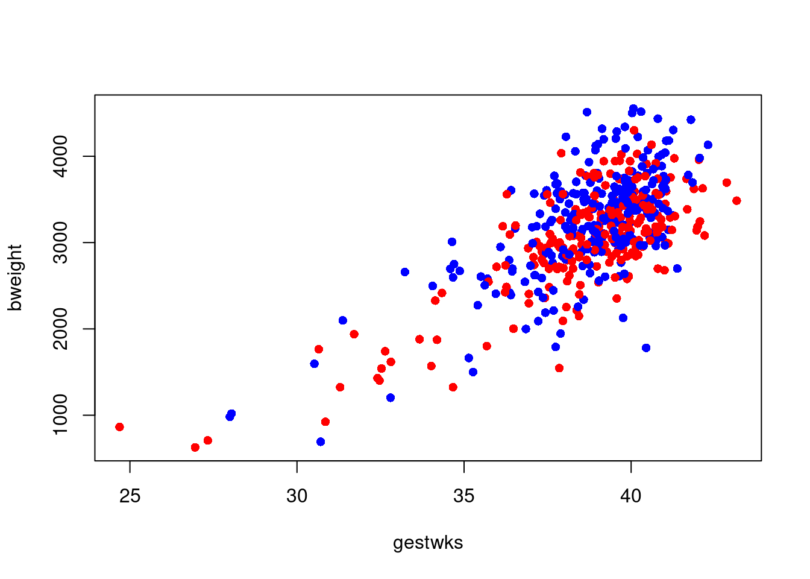 The same trick can be used if we want to have a separate symbol for mothers over 40 say. We first generate the indexing variable:
Note we add 1 because ( matage >= 40 ) generates a logic
variable, so by adding 1 we get a numeric variable with values 1 and
2, suitable for indexing:
so where oldmum is 1 we get pch=16 (a dot) and where
oldmum is 2 we get pch=3 (a cross).
R will accept any kind of complexity in the indexing as
long as the result is a valid index, so you don’t need to create the
variable oldmum, you can create it on the fly:
with(
births,
plot(
gestwks,
bweight,
pch = c(16, 3)[(matage >= 40) + 1],
col = c("blue", "red")[sex]
)
)
5.5 Generating colours
R has functions that generate a vector of colours for you. For example,
## [1] "#FF0000" "#80FF00" "#00FFFF" "#8000FF"produces a vector with 4 colours (not immediately human readable,
though). There are a few other functions that generates other
sequences of colours, type ?rainbow to see them. The
color function (or colour function if you prefer)
returns a vector of the colour names that R knows about. These
names can also be used to specify colours.
Gray-tones are produced by the function gray (or
grey), which takes a numerical argument between 0 and 1;
gray(0) is black and gray(1) is white. Try:
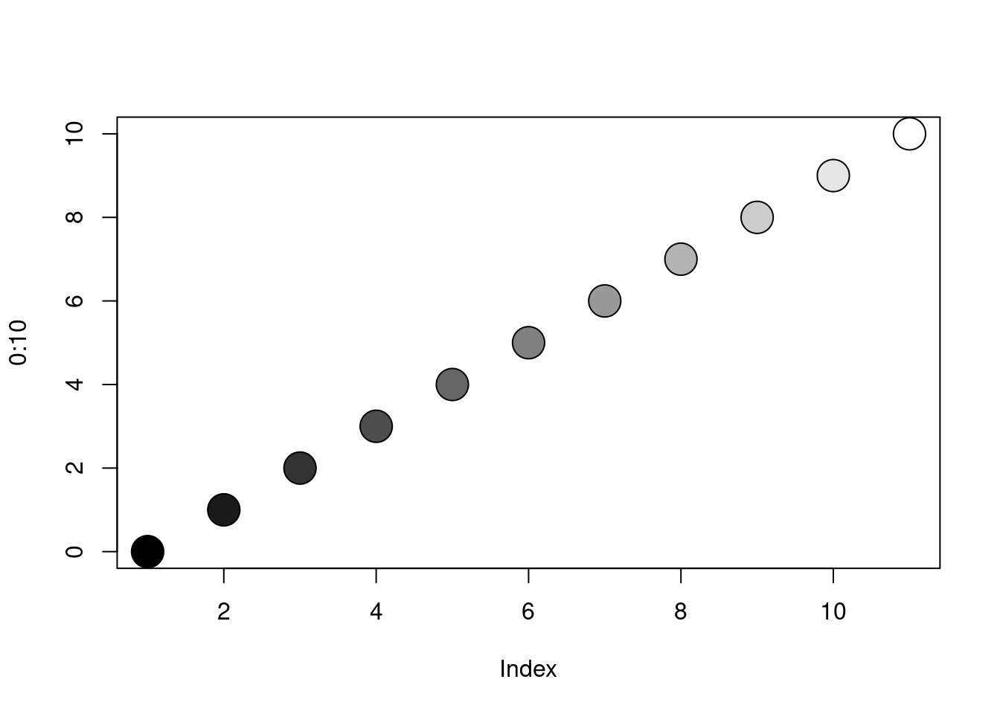
5.6 Saving your graphs for use in other documents
If you need to use the plot in a report or presentation, you can save it in a graphics file. Once you have generated the script (sequence of R commands) that produce the graph (and it looks ok on screen), you can start a non-interactive graphics device and then re-run the script. Instead of appearing on the screen, the plot will now be written directly to a file. After the plot has been completed you will need to close the device again in order to be able to access the file. Try:
pdf(file = "bweight_gwks.pdf", height = 4, width = 4)
with(births, plot(gestwks, bweight, col = c("blue", "red")[sex]))
legend(
"topleft",
pch = 1,
legend = c("Boys", "Girls"),
col = c("blue", "red")
)
dev.off()This will give you a portable document file bweight_gwks.pdf with a graph
which is 4 inches tall and 4 inches wide.
Instead of pdf, other formats can be used (jpg, png, tiff, …). See help(Devices) for the available options.
In window-based environments (R GUI for Windows, R-Studio) you may also use the menu
(File\(\rightarrow\)Save as ... or Export) to save the active graph as a file and even copy-paste may work (from R graphics window to Word, for instance) – however, writing it manually into the file is recommended for reproducibility purposes (in case you need to redraw your graph with some modifications).
It is possible to manipulate any element in a graph, by using the
graphics options. These are collected on the help page of
par(). For example, if you want axis labels always to be
horizontal, use the command par(las=1). This will be in
effect until a new graphics device is opened.
Look at the typewriter-version of the help-page with
or better, use the the html-version through
Help \(\rightarrow\) Html help \(\rightarrow\)
Packages \(\rightarrow\) graphics \(\rightarrow\)
P\(\rightarrow\) par.
It is a good idea to take a print of this (having set the text size to smallest because it is long) and carry it with you at any time to read in buses, cinema queues, during boring lectures etc. Don’t despair, few R-users can understand what all the options are for.
par() can also be used to ask about the current plot, for
example par("usr") will give you the exact extent of the axes
in the current plot.
If you want more plots on a single page you can use the command
This will give you a layout of 2 rows by 3 columns for the next 6
graphs you produce. The plots will appear by row, i.e. in the top
row first. If you want the plots to appear columnwise, use
par( mfcol=c(2,3) ) (you still get 2 rows by 3 columns).
To restore the layout to a single plot per page use
If you want a more detailed control over the layout of multiple graphs
on a single page look at ?layout.
5.7 Interacting with a plot
The locator() function allows you to interact with the plot
using the mouse. Typing locator(1) shifts you to the graphics
window and waits for one click of the left mouse button. When you click,
it will return the corresponding coordinates.
You can use locator() inside other graphics functions to position
graphical elements exactly where you want them. Recreate the birth-weight
plot,
and then add the legend where you wish it to appear by typing
The identify() function allows you to find out which records
in the data correspond to points on the graph. Try
When you click the left mouse button, a label will appear on the graph
identifying the row number of the nearest point in the data frame
births. If there is no point nearby, R will print a warning
message on the console instead. To end the interaction with the
graphics window, right click the mouse: the identify function
returns a vector of identified points.
- Use
identify()to find which records correspond to the smallest and largest number of gestational weeks and view the corresponding records: